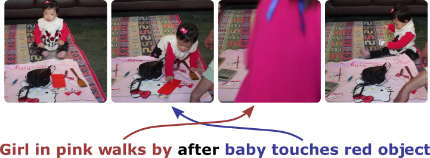

|  | Compositional Temporal Visual Grounding of Natural Language Event Descriptions
Jonathan C. Stroud, Ryan McCaffrey, Rada Mihalcea, Jia Deng, and Olga Russakovsky
|
ABSTRACT: Temporal grounding entails establishing a correspondence between natural language event descriptions and their visual depictions. Compositional modeling becomes central: we first ground atomic descriptions "girl eating an apple," "batter hitting the ball" to short video segments, and then establish the temporal relationships between the segments. This compositional structure enables models to recognize a wider variety of events not seen during training through recognizing their atomic sub-events. Explicit temporal modeling accounts for a wide variety of temporal relationships that can be expressed in language: e.g., in the description "girl stands up from the table after eating an apple" the visual ordering of the events is reversed, with first "eating an apple" followed by "standing up from the table." We leverage these observations to develop a unified deep architecture, CTG-Net, to perform temporal grounding of natural language event descriptions to videos. We demonstrate that our system outperforms prior state-of-the-art methods on the DiDeMo, Tempo-TL, and Tempo-HL temporal grounding datasets.
Code and models for CTG-Net will be made available soon.